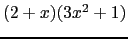
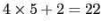

Em C, nós podemos executar operações aritméticas usando variáveis e constantes. Algumas operações mais comuns são:
Estas operações podem ser usadas como mostram os exemplos abaixo, assumindo que as variáveis necessárias já estão declaradas:
celsius = (fahrenheit - 32) * 5.0 / 9.0;
forca = massa * aceleracao;
i = i + 1;
Em C, assim como em álgebra, há uma ordem de precedência de operadores.
Assim, em , expressões em parêntesis são avaliadas primeiro, seguidos por exponenciação, multiplicação, divisão, adição e subtração.
Da mesma forma, em C, expressões entre parêntesis são executadas primeiro, seguidas de *, / and % (que tem todos a mesma precedência), seguido de + and - (ambos com a mesma precedência).
Quando operações adjacentes têm a mesma precedência, elas são associadas da esquerda para a direita. Assim, a * b / c * d % e é o mesmo que ((((a * b) / c) * d) % e).
Esta operação é usada quando queremos encontrar o resto da divisão de dois inteiros. Por exemplo, 22 dividido por 5 é 4, com resto 2 ( ).
Em C, a expressão 22 % 5 terá valor 2.
Note que % só pode ser utilizados entre dois inteiros. Usando ele com um operando do tipo float causa um erro de compilação (como em 22.3 % 5).
Expressões aritméticas podem ser usadas na maior parte dos lugares em que uma variável pode ser usada.
O exemplo seguinte é válido:
int raio = 3 * 5 + 1;
printf("circunferencia = %f\n", 2 * 3.14 * raio);
Exemplos de lugares onde uma expressão aritmética NÃO pode ser usada incluem:
int yucky + 2 = 5;
scanf("%d", &(oops * 5))
Este exemplo é ilegal e causará erro de compilação.
É freqüente em programas C expressões do tipo:
tudo = tudo + parte;
tamanho = tamanho * 2.5;
x = x * (y + 1);
j = j - 1;
C fornece operadores adicionais que podem ser usados para tornar estes tipos de atribuições mais curtos.
Há um operadorador de atribuição para cada operação aritmética listada anteriormente:
Cada uma dessas operações podem ser usadas para tornar as expressões anteriores mais curtas:
tudo += parte;
tamanho *= 2.5;
x *= y + 1;
j -= 1;
Há alguns operadores em C que são equivalentes as seguintes expressões (que são bastante comuns em programas):
k = k + 1; j = j - 1;
Estes operadores adicionais, que são ++ and - -, podem ser usados para encurtar as operações acima:
k++; j--;
Estes operadores também podem ser colocados depois do nome da variável:
++k; --j;
O fato do operador de incremento ser colocado antes ou depois da variável não altera o efeito da operação - o valor da variável é incrementada ou decrementada de um. A diferença entre os dois casos é QUANDO a variável é incrementada. Na expressão k++, o valor de k é primeiro usado e então é incrementada - isto é chamado pós-incremento. Na expressão ++k, k é incrementado primeiro, e então o valor (o novo valor) de k é usado - isso é chamado pré-incremento.
A diferença é ilustrada nos seguintes exemplos:
main()
{
int k = 5;
printf("k = %d\n", k);
printf("k = %d\n", k++);
printf("k = %d\n", k);
}
O programa acima (que usa pós-incremento) imprimirá o seguinte:
k = 5
k = 5
k = 6
A segunda linha impressa com o valor de k é 5 porque o valor de k++ era 5, e k é 6 depois da impressão.
Para o programa:
main()
{
int k = 5;
printf("k = %d\n", k);
printf("k = %d\n", ++k);
printf("k = %d\n", k);
}
O programa, que usa pré-incremento, terá a seguinte saída:
k = 5
k = 6
k = 6
A segunda linha impressa é 6 porque o valor de ++k é 6.
Os operadores de atribuição não podem ser usados com expressões aritméticas. Por exemplo, as expressões
(ack + 2)++;
(nope + 3) += 5;
resultarão em erros de compilação.
Finalmente, quando usar o operador de incremento em um printf(), tome cuidado para não fazer o seguinte:
printf("%d %d\n", ++uhoh, uhoh * 2);
Embora isso seja perfeitamente legal em C, os resultados não são garantidados que sejam consistentes. A razão para isso é que não há garantia que os argumentos do printf() sejam avaliados em uma determinada ordem. O resultado do printf() será diferente dependendo se ++uhoh é avaliado primeiro ou depois de uhoh * 2.
A solução para este problema é escrever o seguinte:
++uhoh;
printf("%d %d\n", uhoh, uhoh * 2);
Em C, há operadores que podem ser usados para comparar expressões: os operadores relacionais.
Há seis operadores relacionais em C:
Os resultados deste operadores é 0 (correspondendo a falso), ou 1 (correspondendo a verdadeiro). Valores como esses são chamados valores booleanos. Algumas linguagens de programação como Pascal tem um tipo de variável distinto para valores booleanos. Este não é o caso do C, onde valores booleanos são armazenados como variáveis numéricas tais como o int.
Considere o seguinte programa:
main()
{
int idade;
idade = 17;
printf("Pode tirar carteira de motorista? %d\n", idade >= 18);
idade = 35;
printf("Pode tirar carteira de motorista? %d\n", idade >= 18);
}
A saída deste programa será:
Pode tirar carteira de motorista? 0
Pode tirar carteira de motorista? 1
Na primeira linha, idade é 17. Logo, 17 >= 18 é falso, que é 0.
Depois disso, idade é 35. Logo, 35 >= 18 é verdadeiro, que é 1.
Note também que o operador de igualdade é escrito com ``sinais de igual duplo'', ==, não =. Tenha cuidado com esta diferença, já que colocar = no lugar de == não é um erro sintático (não gera erro de compilação), e não significa o que você espera.
Operadores aritméticos tem precedência maior que os operadores relacionais. Por exemplo, a expressão 3 + 5 < 6 * 2 é o mesmo que (3 + 5) < (6 * 2).
Se por alguma razão você quer que o resultado do uma operação relacional em uma expressão aritmética, é necessário usar parêntesis. Por exemplo, a expressão score + (score == 0) será sempre igual ao valor de score, exceto quando o valor de score seja 0. Neste caso, o valor da expressão é 1 (porque (score == 0) é igual a 1).
Uma observação sobre valores booleanos - embora você possa assumir que o valor de uma operação relacional é 0 ou 1 em C, qualquer valor diferente de zero é considerado verdadeiro. Falaremos sobre isso mais tarde durante o curso.
O que é impresso pelos seguintes programas:
#include <stdio.h>
main() {
int score = 5;
printf(``%d'', 5 + 10 * 5 % 6); ==> 7
printf(``%d'', 10 / 4); ==> 2
printf(``%f'', 10.0 / 4.0); ==> 2.5
printf(``%c'', 'A' + 1); ==> B
printf(``%d'', score + (score == 0)); ==> 5
}
#include <stdio.h>
main() {
int n1, n2, n3;
printf(``Entre com um numero inteiro: ``);
scanf(``%d'', &n1);
n1 += n1 * 10;
n2 = n1 / 5;
n3 = n2 % 5 * 7;
n2 *= n3-- % 4;
printf(``%d %d %d'', n2, n3, n2 != n3 + 21);
}
Como é a seguinte expressão completamente parentizada ?
a * b / c + 30 >= 45 + d * 3 ++e == 10
Exemplo 1: escreva um programa que leia um número inteiro e imprima 0 se o número for par e 1 se o número for ímpar.
#include <stdio.h>
main() {
int numero;
printf(``Entre com um numero inteiro: ``);
scanf(``%d'', &numero);
printf(``\nPar? %d\n'', numero % 2 );
}
Exemplo 2: escreva um programa que leia 3 números inteiros e calcule a soma, média, e produto.
#include <stdio.h>
main() {
int n1, n2, n3;
int soma;
printf( "Entre com 3 numeros inteiros: ");
scanf( "%d %d %d",&n1, &n2, &n3);
soma = n1 + n2 + n3;
printf( "Soma = %d\n", soma );
printf( "Media = %8.2f\n", soma / 3.0 );
printf( "Produto = %d\n", n1 * n2 * n3 );
}
| Operador | Associatividade |
() |
esquerda para direita |
++ -- & (unários) |
direita para esquerda |
* / % |
esquerda para direita |
+ - |
esquerda para direita |
< <= > >= |
esquerda para direita |
== != |
esquerda para direita |
= += -= *= /= %= |
direita para esquerda |